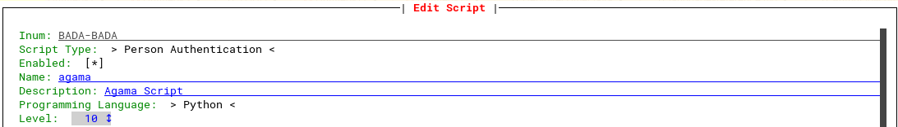
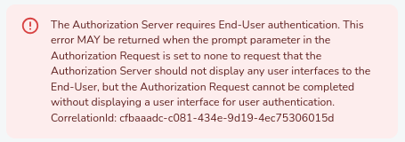

Running the examples#
This page provides guidance on how to deploy and test any of the projects in this programming guide. Basic Linux and OS virtualization knowledge is desirable.
Janssen server setup#
The first step is setting up a Janssen Server instance. While there are several ways to do so, this guide focuses on a Virtual Machine approach. Desktop Virtualization software such as Oracle VirtualBox or VMWare Fusion/Workstation can be used, however, since there is no need for a GUI, developers may consider using more command-line oriented tools like Incus.
Several operating systems are supported for Jans. For the purpose of testing here, 8GB of disk and 4GB of RAM suffices: only a couple of server components will be installed. This is assuming a minimalistic OS image was used.
The next step is downloading a suitable package. Navigate to the Janssen releases page and click on the latest stable version on the release list, e.g. v2.3.0. Scroll down, click on "Show all assets", and pick the file that matches the selected operating system, e.g. jans_2.3.0-stable.ubuntu22.04_amd64.deb.
Download the file and transfer it to the VM, or preferably download it directly from the VM. Then install the file in accordance to the OS. This page includes links with specific commands for the supported operating systems. In the case of Ubuntu, for instance, it would be a matter of issuing sudo apt install jans_2.3.0-stable.ubuntu24.04_amd64.deb. Note the installation process may download package dependencies, if missing.
Finally, launch the Jans installer. The below command performs a non-interactive installation with the components required to run the examples:
sudo python3 /opt/jans/jans-setup/setup.py -n --no-fido --no-scim \
-ip-address 123.456.78.90 -host-name test.me \
-admin-password admin1234 \
-city Boston -state MA -country US -org-name Acme -email wecoyote@acme.com
Ensure to set proper values for:
- IP address
- Hostname. Preferably use a fully qualified name. Do not use
localhost. Ensure the name resolves to the IP address supplied - Admin password
Regarding parameters in the last line (city, state, etc.), these are used to generate a self-signed TLS certificate. They can be changed if desired.
At the end of installation the message "Janssen Server installation successful!" will be shown. Run the command jans status. It will show that both jans-auth and jans-config-api components are up and running.
Generating a project's archive#
In the machine where this repository was cloned, cd to the directory of the project of interest, e.g. cd basics-hello-world/project, then generate an archive:
zip -rq hello-world.gama *
This will generate a zip file named hello-world.gama with the project's contents. Note the project directory itself is not part of the archive. Any compression utility can be used to generate an Agama archive - just ensure it generates files using the ZIP format. The extension does not matter actually - gama is just an ad-hoc convention.
Transfer the archive to the VM.
Configurations#
If the project in question requires supplying configuration properties, prepare a JSON file based on the configs section of the project's descriptor (project.json). This will be a JSON object whose keys are qualified names of flows, like:
{
"com.acme.authn.sms": {
"accountId": "a1551b8f-80d9-4344-9b09-0c92f3350b0f",
"fromNumber": "+1 123 456 7890",
"authToken": "M1al3d$iJtKa"
},
"com.acme.authn.userpwd" : {
"blockAccount": {
"afterAttempts": 4,
"timeFrameSeconds": 30
}
}
Transfer this to the VM as well. Note "configs" itself is not part of the file.
Project deployment#
The "Text User Interface" (TUI) allows server administrators perform configuration of Janssen server components. This is the tool that will be employed here for managing Agama projects. To start, execute in the server VM.:
python3 /opt/jans/jans-cli/config-cli-tui.py --noGorn
Follow the instructions: open a browser with the requested URL and provide user credentials, that is, admin and the associated password.
Navigate to the "Scripts" screen (keyboard shorcut should be Alt+r). Search "agama" and highlight the row corresponding to "Agama script". Press Enter and tab successively until "Enabled" is selected, then press enter or space so the field value is marked with an asterisk.

Tab again to highlight the "Save" button and press enter.
The details in "Using Text-based UI" bring a helpful overview on how to manage Agama projects. Deploy the project of interest by uploading the corresponding gama archive. When projects do not feature metadata (no project.json) like basics-hello-world, TUI will prompt to provide a name. A project name may contain letters, digits, and hyphens.
Wait one minute to ensure completion of deployment and then view the project details. Make sure to select the row for the project beforehand. The TUI doc page mentioned above explains how to get to the details screen. Note how all flows belonging to the project are listed. If errors were encountered when processing the archive, they will be displayed.
Once the project has been successfully deployed, access the configuration screen and supply the JSON configuration file. This step is only needed when one or more flows require configuration properties to work. Back in the details screen, verify the configurations were parsed correctly.
Launching a flow#
For actual testing, the Jans Tarp browser extension will be used here. Ensure to install a stable version from the Jans release pages, then do the following:
-
In the browser, visit
https://<your-server-host-name>. The hostname should be as passed at installation time (setup.pyscript). Acknowledge the warning about visiting a site that is protected by a self-signed certificate and proceed. An "OK" page will be shown -
Open the extension and register a client as indicated in the Tarp README. Use the proper value for issuer and "openid" for scopes
-
Once registered, run an authentication flow using:
- Additional params: leave empty
- Scopes: openid
- Acr value: agama_
, e.g. agama_com.acme.basic.helloworld
The flow of interest will be launched in a new window. Upon finalization a "redirecting you" page is displayed and the window is automatically closed.
This way of running flows assume a context of user authentication, so it is expected that if a flow ends successfully, a reference (ID) to the user to authenticate is included in the Finish instruction. This is not the case in many of the flows of this guide, so Tarp will show something like:

indicating the authorization server did not complete user authentication.
When the user to authenticate is referenced in Finish, as in the Access control project, Tarp will show a "User details" tab with one or more tokens (possibly in JWT format) that relate to the authentication event. At this point, there will be an existing session for the given user. To launch another flow, click on the "Logout" button.
Note: The user referenced must match the identifier of an existing user in Jans, of course. TUI can be used for adding/removing users as well: visit the "Users" section at the top of the window. The identifier is the "Username" in this case.
In the case of failed flows, like when using Finish false, an "Autentication failed" page is displayed.
Sending parameters#
Input parameters are also included in the launch URL (the URL Tarp generates for the window where the flow will run). Note parameters are not passed using the "additional params" field in Tarp but in the Acr value, like this: agama_<qualified-flow-name>-<encoded-params>.
The Agama engine doc page of Jans illustrates how to encode input parameters.
Logs location#
The output of Log statements in flows can be found in the authentication server (AS) scripting log, which is found at /opt/jans/jetty/jans-auth/logs/jans-auth_script.log.
In the main AS log (/opt/jans/jetty/jans-auth/logs/jans-auth.log) other details can be found such as runtime errors, source code compilation errors, freemarker issues, etc. Normally, when these kind of flow "crashes" occur, relevant errors messages are displayed in-browser.
Visit the Logging Overview for more information on Jans logging.
Project redeployment#
The avid developer may like to tweak some of the examples to his taste. From simple template changes to more sophisticated flow behavior changes. These are some hints to make the edit-deploy-test cycle more productive:
- Ensure the client registered in Tarp has an expiration date far in the future
- It is not necessary to remove the project from the list of Agama projects when a new version comes. Upload the archive as usual and the engine will replace the project accordingly
- For projects that bundle Groovy or Java, use an IDE or advanced editor to code. This ensures source files have no syntax errors or other issues that otherwise would arise later when testing
- In line with the previous point. Do some testing if possible before packaging. This is a great time saver
tailthe server logs as flow tests are conducted
Reconfiguration#
Replacing configuration properties for a project do not require redeployment. Supply the new properties as done the first time. Property changes take effect immediately.
FAQ#
Are there alternative tools to deploy projects?#
TUI supports a non-interactive command-line approach for project management. Find more information here.
Janssen server also provides an API for these purposes. It demands quite more work as expected. Both the command-line and text-based UI make use of the API.
Are there other tools that can be used to launch flows?#
Yes. In general any Relying Party (RP) app can be used. This demands some knowledge of OAuth/OIDC though, and possibly coding skills. Tarp is by far the easiest way to test flows.
Updates in Java code seem not to take effect, what to do?#
This issue sometimes occur (Java code stalled/not refreshed). Remove your project, restart the authentication server (jans-auth-server), and attempt to deploy again.